01
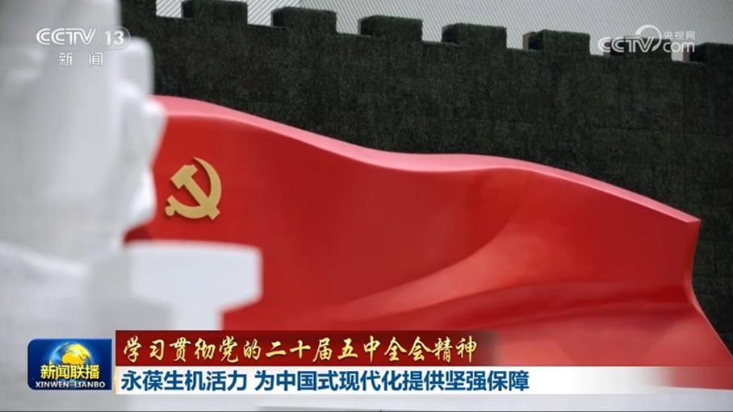
【学习贯彻党的二十届五中全会精神】永葆生机活力 为中国式现代化提供坚强保障
党的二十届五中全会就持之以恒推进全面从严治党作出系统部署。连日来，广大干部群众深入学习贯彻全会精神。大家表示，要更加紧密地团结在以习近平同志为核心的党中央周围，筑牢信仰之基、砥砺奋进之志，把我们党建设得更加坚强有力，为推进中国式现代化提供坚强保障。
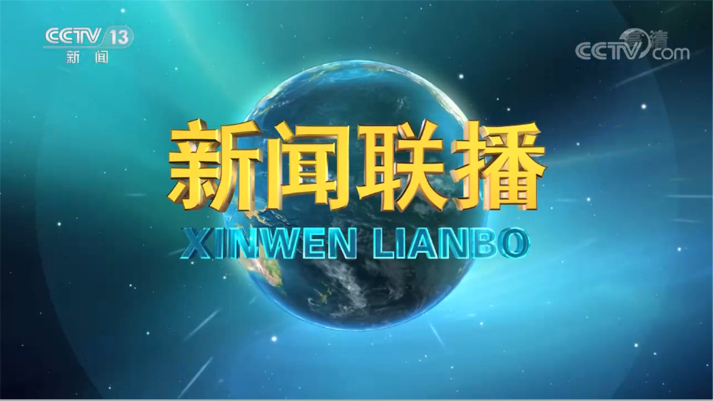

党的二十届五中全会就持之以恒推进全面从严治党作出系统部署。连日来，广大干部群众深入学习贯彻全会精神。大家表示，要更加紧密地团结在以习近平同志为核心的党中央周围，筑牢信仰之基、砥砺奋进之志，把我们党建设得更加坚强有力，为推进中国式现代化提供坚强保障。
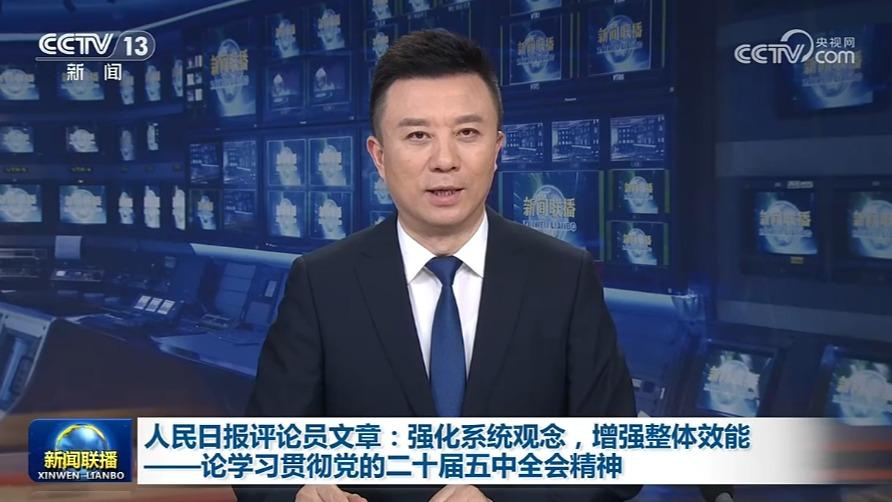
明天（11月4日）出版的《人民日报》将发表评论员文章，题目是《强化系统观念，增强整体效能——论学习贯彻党的二十届五中全会精神》。
本台今天（11月3日）播发央视快评《为民造福是最大政绩》。
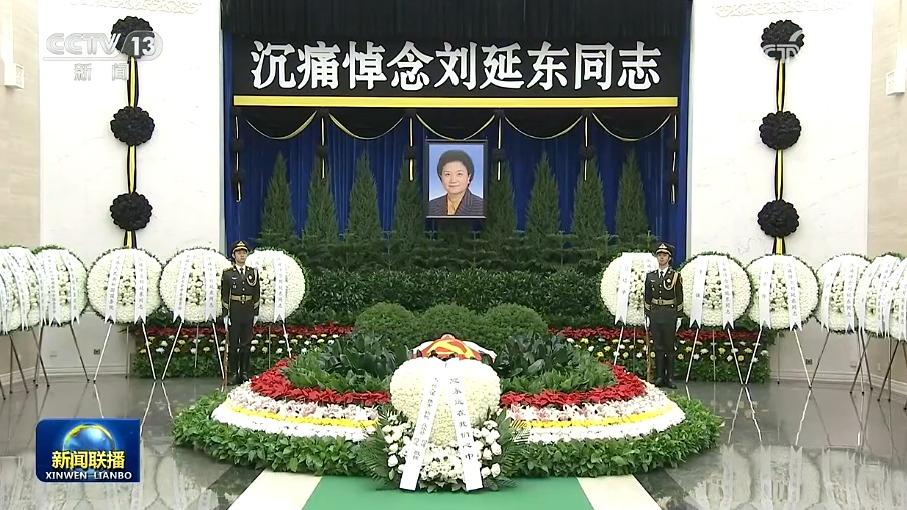
刘延东同志遗体在京火化习近平赵乐际王沪宁蔡奇丁薛祥李希韩正等到八宝山革命公墓送别
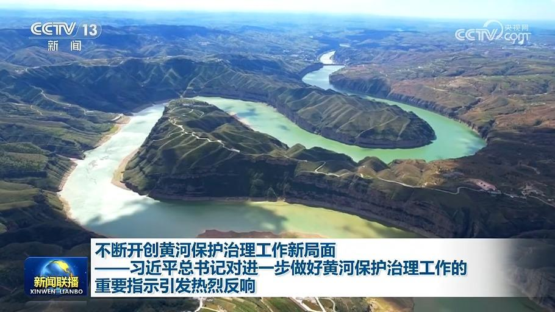
今年是党领导人民治理黄河80年，习近平总书记近日对进一步做好黄河保护治理工作作出重要指示。大家表示，总书记的重要指示，为新征程上持续推进黄河流域生态保护和高质量发展提供了重要遵循，要持续完善大保护大协同格局，努力让黄河这条母亲河越来越美，永续造福中华民族、惠泽子孙后代。
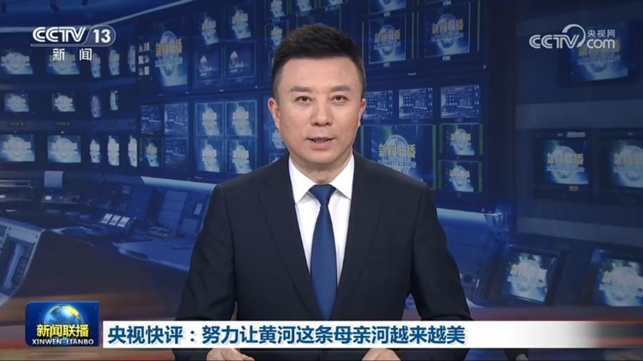
本台播发央视快评《努力让黄河这条母亲河越来越美》。
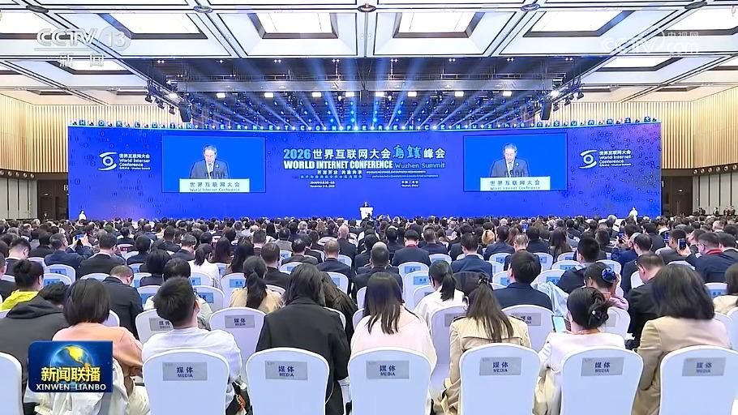
国务院总理李强3日上午在浙江乌镇出席2026年世界互联网大会乌镇峰会开幕式并发表主旨演讲。
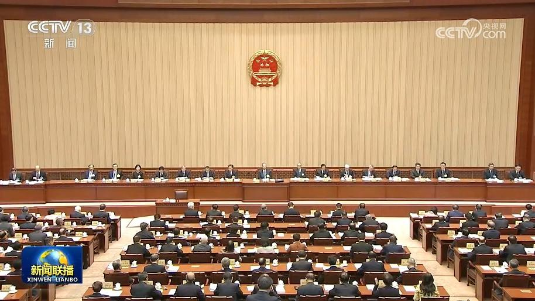
十四届全国人大常委会第二十五次会议3日上午在京举行第二次全体会议。赵乐际委员长出席。
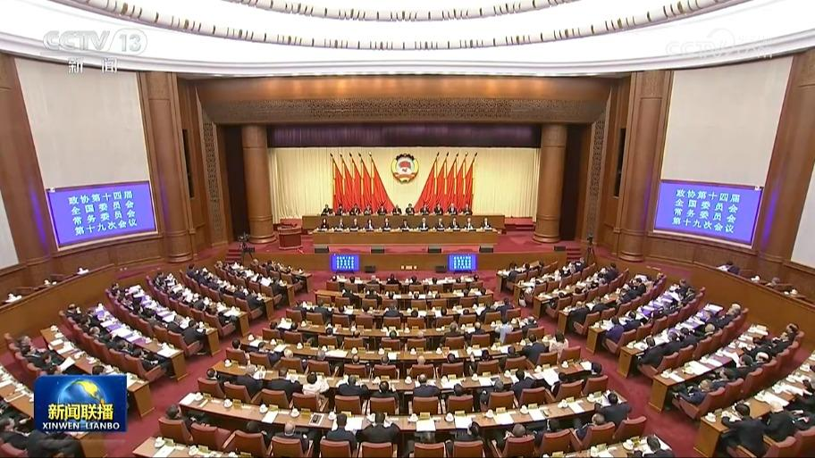
政协第十四届全国委员会常务委员会第十九次会议3日上午在京开幕，专题传达学习贯彻中共二十届五中全会精神。中共中央政治局常委、全国政协主席王沪宁主持开幕会。中共中央政治局常委、中央纪律检查委员会书记李希应邀出席开幕会并作报告。
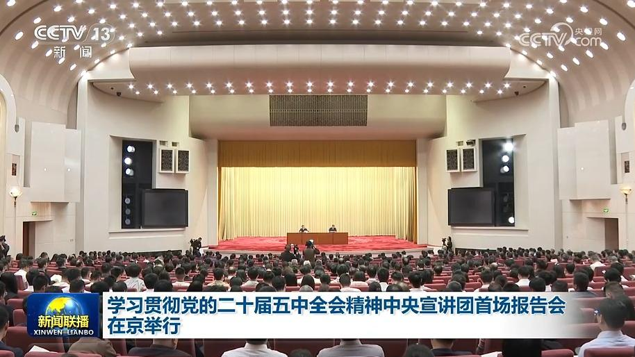
中央宣传部、中央和国家机关工委、教育部、中央军委政治工作部、中共北京市委3日下午在北京人民大会堂举办学习贯彻党的二十届五中全会精神中央宣讲团首场报告会。中央宣讲团成员、中央政策研究室主任唐方裕作宣讲报告。
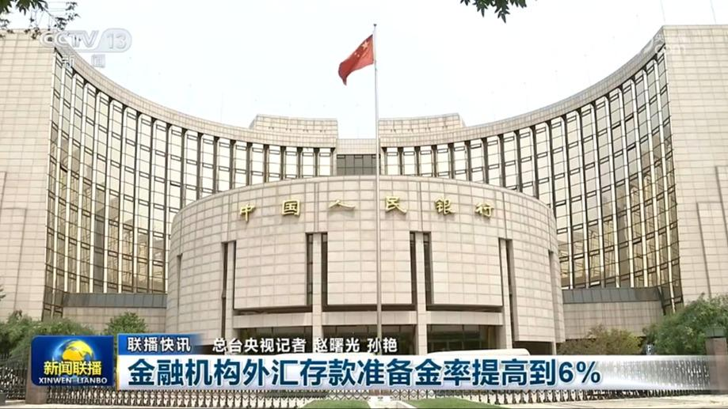
金融机构外汇存款准备金率提高到6%
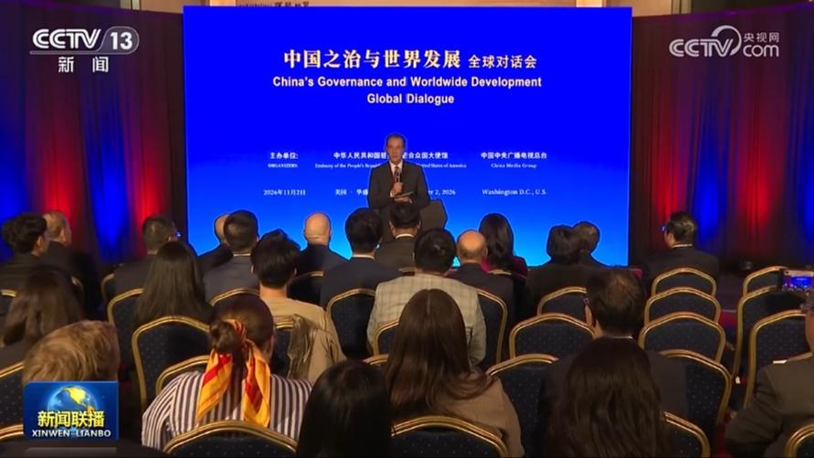
当地时间11月2日，由中国中央广播电视总台和中国驻美大使馆联合主办的“中国之治与世界发展”全球对话会美国专场在华盛顿举行。与会中美嘉宾表示，中共二十届五中全会深刻总结了中国新时代以来全面从严治党成就和经验，对持之以恒推进全面从严治党作出系统部署，必将对中国未来发展产生深远影响，越来越多国家和政党正从“中国之治”中获得启发，寻求适合自身国情的治理道路。……
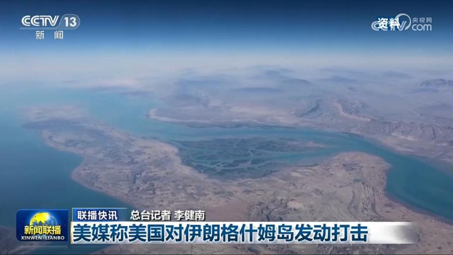
美媒称美国对伊朗格什姆岛发动打击